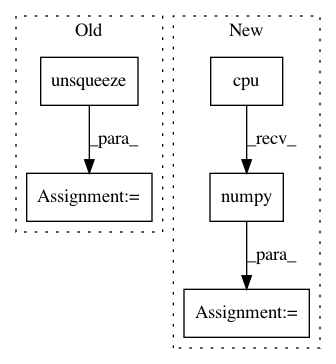

f98bd2ec9d4289939ff6661d5a9c43ee7e8996f7,models/shared_rnn.py,RNN,forward,#RNN#Any#Any#Any#Any#,195
Before Change
if hidden_norms.data.max() > max_norm:
logger.info(f"clipping {hidden_norms.max()} to {max_norm}")
norm = hidden[hidden_norms > max_norm].norm(dim=-1)
norm = norm.unsqueeze(-1)
detached_norm = torch.autograd.Variable(norm.data,
requires_grad=False)
hidden[hidden_norms > max_norm] *= max_norm/detached_norm
After Change
// This workaround for PyTorch v0.3.1 does everything in numpy,
// because the PyTorch slicing and slice assignment is too
// flaky.
hidden_norms = hidden_norms.data.cpu().numpy()
clipped_num += 1
if hidden_norms.max() > max_clipped_norm:
max_clipped_norm = hidden_norms.max()
clip_select = hidden_norms > max_norm
clip_norms = hidden_norms[clip_select]
mask = np.ones(hidden.size())
normalizer = max_norm/clip_norms
normalizer = normalizer[:, np.newaxis]
mask[clip_select] = normalizer
hidden *= torch.autograd.Variable(
In pattern: SUPERPATTERN
Frequency: 3
Non-data size: 5
Instances
Project Name: carpedm20/ENAS-pytorch
Commit Name: f98bd2ec9d4289939ff6661d5a9c43ee7e8996f7
Time: 2018-03-11
Author: dukebw@mcmaster.ca
File Name: models/shared_rnn.py
Class Name: RNN
Method Name: forward
Project Name: mozilla/TTS
Commit Name: b1935c97fa1175908c579a4db06214174253f5f4
Time: 2020-06-26
Author: erogol@hotmail.com
File Name: server/synthesizer.py
Class Name: Synthesizer
Method Name: tts
Project Name: leftthomas/SRGAN
Commit Name: 14c0cf773f514788aca6b935298fa186890eecc1
Time: 2017-11-21
Author: leftthomas@qq.com
File Name: test.py
Class Name:
Method Name: